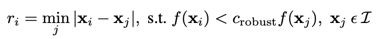
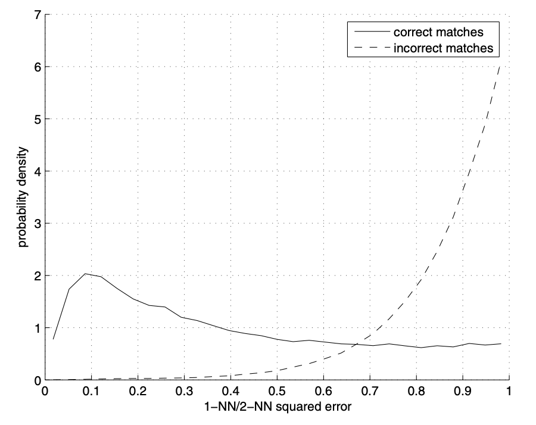

In this section, I want to further develop the mosaicing to select corresponding opints automatically. I followed Matthew, Richard and Simon's paper Multi-Image Matching using Multi-Scale Oriented Patches. The main idea is to find all corner points in both images, then cut number of points down and make sure they distribute evenly. Finally, I pair points up by having least squared difference between patches around corresponding points.
The first step is to find all possible interesting edge/corner points in both images. I used build-in method corner_harris from Python package skimage.feature and discard points at edge with width 50 to make sure we can get a 100 pixel * 100 pixel patch around every point later. The resulting points are as below.
There are too many irrelevant points, so I try to cut the number of points down by picking top 100 points with highest minimum supressing radius ri. ri is defined as the minimum distance from point i to any point which has higher corner strength (returned by corner_harris method) than i even after being multiplied by an user-defined parameter c=0.9:
Higher the minimum supressing radius, more significant the point is in the whole image. The point with highest ri will be the most important point in the image. The top 100 points with highest minimum supressing radius ri are as below:
I want to pair up points who have similar nerighborhood, so I want to describe every point's neighborhood using a patch. Because the input images are 2000 pixel * 1500 pixel, I extract a patch of size 100*100 around every point, then normalized it and applied gaussian filter to blur it before finally subsample it to 10*10. Here is an example for producing a patch around a point.
Now with the help of patches, we can pair points up. For every patch i for image 1, I calculate the sum of square difference between pixels in the it and any patch for image 2, and find the patch j for image 2 which produces the smallest SSD (1-NN squared error) and the patch k which produces the second smallest SSD (2-NN squared error). Based on the following plot from the paper, we can assume that if 1-NN squared error / 2-NN squared error <0.67, the patch i for image 1 and the patch j for image 2 is a truly corresponding pair.
All the point pairs left are as below.
Although most pairs look reasonable, you might notice there are still some unreasonable pairs, like the very left one in image 1 and the one on a window in image 2. To further narrow down to correct pairs, we use RANSAC to find correct set of inliers. The process is:
1. For n rounds:
Select 4 pairs at random.
Compute exact homography H.
Create an empty inlier list for this round.
For all point pairs, use H to project points for image 1 and compute the error of the result compared to the points for image 2 in that pair. If error<epsilon, put the pair in inlier list.
2. Find the inlier list with largest size.
3. Recompute homography H using all the pairs in the largest-size inlier list by applying least square regression.
I choose epsilon=10000 after some experiment. The pairs in the final largest-size inlier list are as below.
After I get the precise corresponding points and homography H, I can stitch mosiac in the same way as the previous section. The final result looks as good as what I've done manually.
We can compare the manual result (left) and automatic (right) result side by side. They look identical.
manual
automatic
In this example, I captures a surface plane of desk. I reduce epsilon to be 5000 here for RANSAC to cut more incorrect pairs. Although the point pairs look very promisive, the stitching result is not ideal. That may be because the surface that I was taking pictures of is actually not a perfect flat plane.
Compare with manual result (left), actually automaic result isn't that good. My conclusion is that the corresponding point pairs produced by automatic process is biased to concentrate on lower part of the image, which makes the upper part skewed.
manual
automatic
In this example, I use images from google map so they are captured at 1 fixed location. The overlapped part is still a little bit blured.
created with
Website Builder Software .